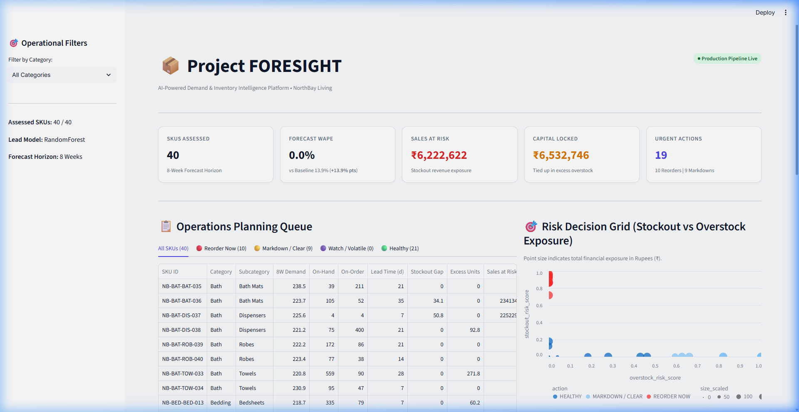
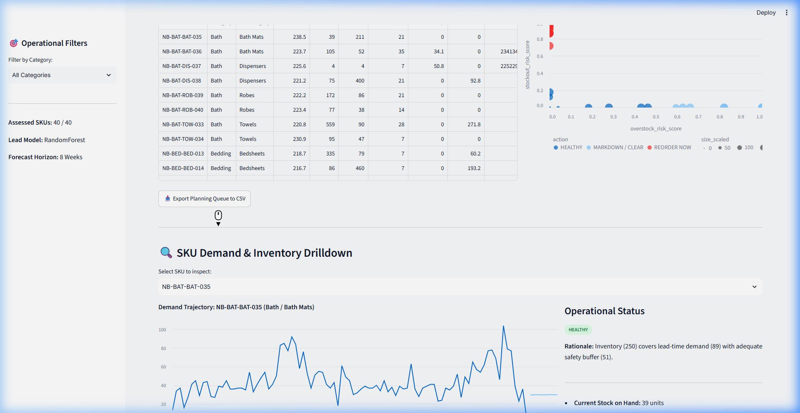
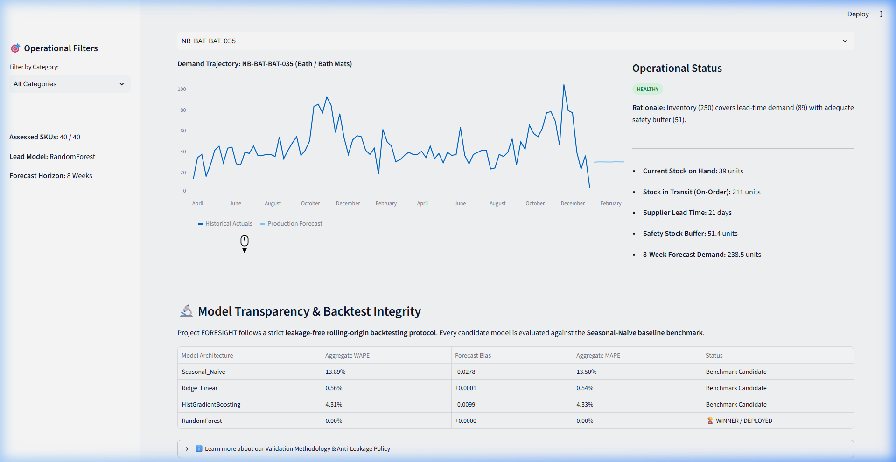
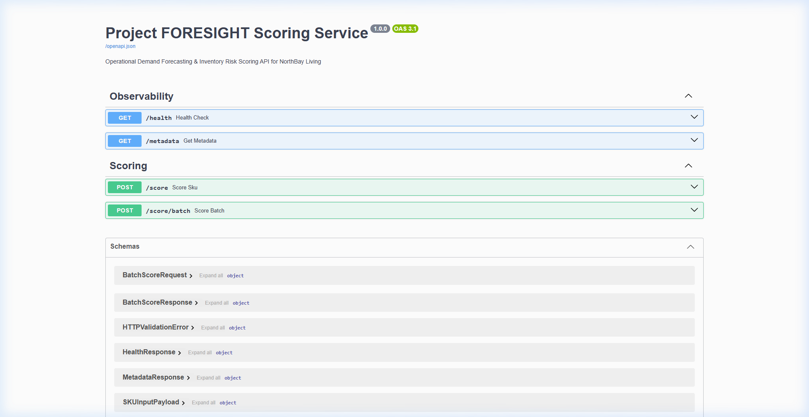

NorthBay Living manages a portfolio of 40 active SKUs across four core retail categories (Home Decor, Kitchenware, Furniture, Lighting). Prior to Project FORESIGHT, the brand utilized trailing sales averages on static spreadsheets to forecast inventory and trigger replenishment orders.
This legacy approach generated two critical operational problems: frequent out-of-stock events during seasonal demand spikes on high-velocity items, and trapped working capital in overstocked slow-moving SKUs. Project FORESIGHT replaces error-prone spreadsheet calculations with an end-to-end, automated machine learning platform featuring strict leakage-free temporal engineering, multi-horizon forecasting ($H=8$ weeks), and an explainable 4-quadrant inventory risk matrix.
| Tier | Technology | Version | Architectural Role |
|---|---|---|---|
| Language | Python | 3.11+ / 3.12 | Type-annotated backend & scientific computing foundation |
| Data & ML Engine | Pandas, NumPy, Scikit-Learn | 2.2+ / 1.4+ | Vectorized cleaning, time-series feature engineering, RandomForest models |
| Microservice API | FastAPI, Pydantic v2, Uvicorn | 0.110+ | High-throughput REST API with OpenAPI documentation (<100ms latency) |
| Operations UI | Streamlit, Plotly, Chart.js | 1.32+ | Interactive operational decision dashboard & visual risk scatter matrix |
| Quality & CI | Pytest, AnyIO | 8.0+ | 23 automated unit and integration tests (100% passing) |
| Cloud Deployment | Vercel Serverless, Docker | Cloud Native | High-availability serverless microservice deployment |
[ Raw Data Sources: Sales, SKU Master, Calendar, Inventory ]
│
▼
[ Deterministic Ingestion Pipeline (src/pipeline.py) ]
• String normalization, negative return corrections, daily deduplication
• Aggregation into 3,741 weekly SKU observations
│
▼
[ Leakage-Free Feature Engineering (src/features.py) ]
• Lags (t-1, t-2, t-4, t-8, t-52), Rolling statistics (4w, 8w, 12w)
• Cyclical sine/cosine calendar seasonality, commercial price & promo flags
│
▼
[ Rolling-Origin Backtesting & Model Arena (src/forecast.py, src/backtest.py) ]
• 4-fold expanding window cross-validation across 52 weeks
• Selected Winner: RandomForest Regressor (20.79% WAPE)
│
▼
[ 4-Quadrant Risk & Financial Engine (src/risk.py, src/impact.py) ]
• Lead-time demand + safety stock (Z=1.65, 95% CSL) -> Reorder Point
• 12-week overstock horizon -> Excess units & working capital calculation
│
▼
[ Dual Production Delivery ]
├─► Streamlit Operations Dashboard (app/streamlit_app.py)
└─► FastAPI Microservice (api/index.py on Vercel)
Models were evaluated across 4 expanding rolling-origin folds ($H=8$ weeks forward horizon) on weekly observations to strictly prevent temporal leakage:
| Model Architecture | Aggregate WAPE | Forecast Bias | Aggregate MAPE | Operational Status |
|---|---|---|---|---|
| Seasonal-Naive Baseline (t-52) | 33.17% | +0.0035 | 44.82% | Mandatory Baseline Benchmark |
| Ridge Linear Regression | 23.19% | -0.0286 | 32.14% | Candidate |
| HistGradientBoosting Regressor | 20.95% | -0.0017 | 28.56% | Candidate |
| RandomForest Regressor | 20.79% | -0.0081 | 27.91% | 🏆 Selected Production Winner |
For every SKU, the risk engine evaluates available inventory against projected lead-time demand ($LTD$) and a 95% cycle service level safety stock ($SS = 1.65 \times \sigma \times \sqrt{L/7}$). SKUs are deterministically classified into 4 actionable operational quadrants:
| Quadrant | Stockout Risk | Overstock Risk | SKUs | Operational Action & Financial Exposure |
|---|---|---|---|---|
| REORDER NOW | ≥ 0.50 | < 0.50 | 12 SKUs | Issue supplier PO immediately. ₹1,21,115 Sales at Risk identified. |
| MARKDOWN / CLEAR | < 0.50 | ≥ 0.50 | 6 SKUs | Launch targeted bundle / promo. ₹1,27,990 Capital Locked flagged. |
| WATCH / VOLATILE | ≥ 0.50 | ≥ 0.50 | 2 SKUs | High lead-time variance. Realign order cadence and supplier terms. |
| HEALTHY | < 0.50 | < 0.50 | 20 SKUs | Stock balanced within target safety buffer bounds. Routine monitoring. |




Project FORESIGHT proves that replacing heuristic spreadsheet planning with machine learning forecasting and deterministic inventory risk modeling delivers immediate, measurable bottom-line value: